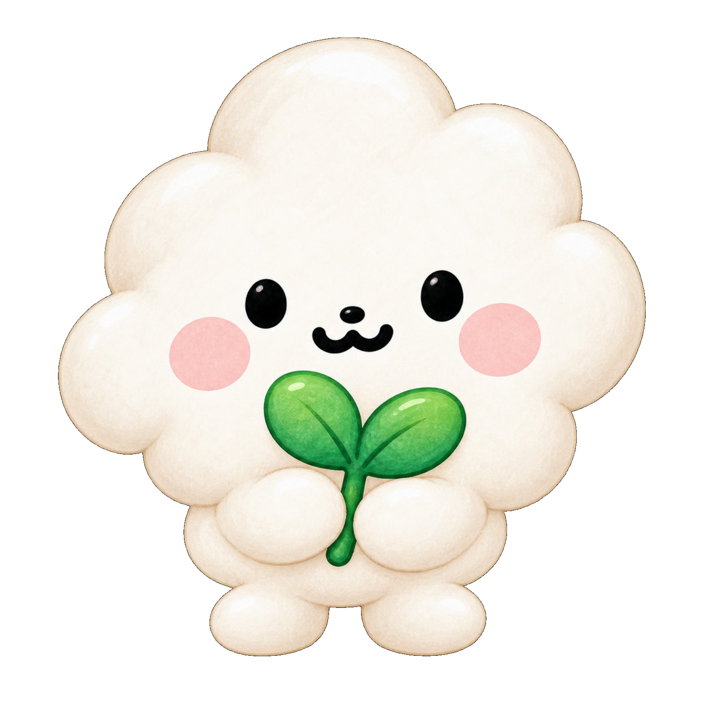

인지 · 주의 · 기억 · 읽기쓰기오늘 연습할 힘을
오늘 연습할 힘을
골라서 게임해요.
영역 → 세부주제 → 게임 순서로 찾고,
게임 안에서는 모아와 친구들의 모험이 이어집니다.

영역별 게임
인지·학습 살펴보기
먼저 분야를 고른 뒤, 게임·활동지·관련 설명을 바로 살펴볼 수 있어요.
완료한 게임 0 / 26
이 영역은 다음 게임을 준비 중이에요.
분류는 먼저 만들어 두고, 게임은 하나씩 독립적으로 추가합니다.
 찾기숲
찾기숲 기억길
기억길 말칸공방
말칸공방 글자수리소
글자수리소
모아의 생각정원
게임 미리보기
어떤 게임인지 먼저 보고 시작해요.
난이도 고르기
문제 수 고르기
쉬움 · 10문제 · 문제 순서는 매번 달라져요.
👀 게임 예시실제 게임은 5스테이지로 진행돼요.
5문제마다 쉬어가는 화면이 나와요. 반복해도 문제는 조금씩 달라져요.
준비되면 바로 시작할 수 있어요. 시간 제한은 없어요.
선생님 설정 · 필요한 경우에만
준비됐으면 시작!정원
게임
1 / 5🌱 0

오늘의 미션
준비!
천천히 보고 시작해요.
🌱
게임 완료!잘했어!
오늘의 길을 끝까지 걸었어요.
🌱 0